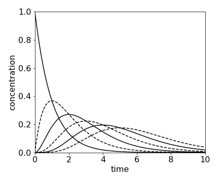
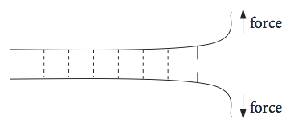
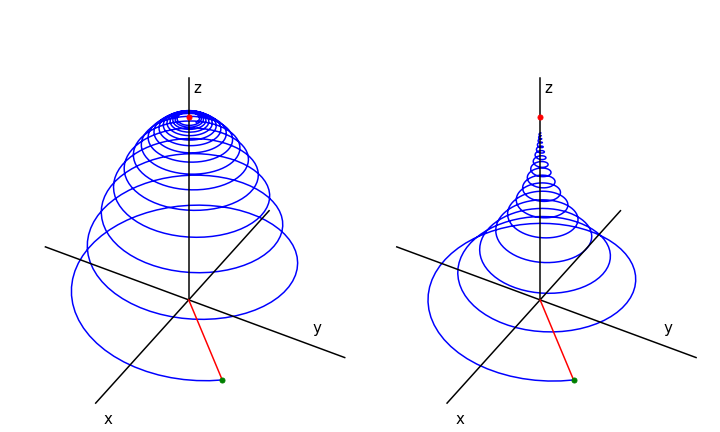
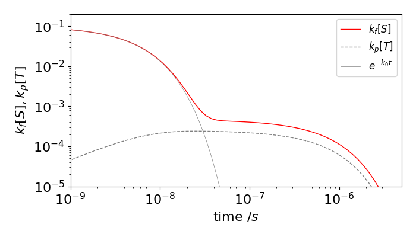
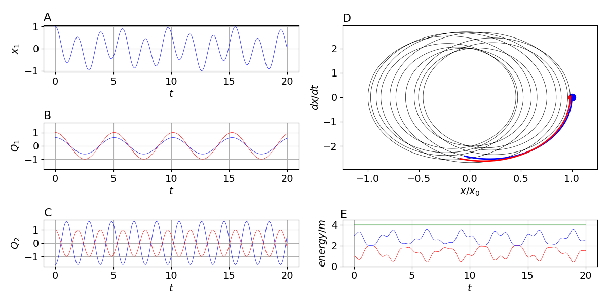

13 Simultaneous equations
Contents
13 Simultaneous equations#
# import all python add-ons etc that will be needed later on
%matplotlib inline
import numpy as np
import matplotlib.pyplot as plt
import sympy as sp
sp.init_printing() # allows printing of SymPy results in typeset maths format
plt.rcParams.update({'font.size': 16}) # set font size for plots
13.1 Sequential chemical reactions \(\displaystyle A \stackrel{k_1} \longrightarrow B \stackrel{k_2}\longrightarrow C\)#
Complex chemical reactions can often be represented as a set of simultaneous reactions. The sequential scheme \(\displaystyle A \stackrel{k_1} \longrightarrow B \stackrel{k_2}\longrightarrow C\) has already been solved with the integrating factor method in Section 2, and as an eigenvalue - eigenvector equation in Chapter 7.12.3. Here it is converted into a second-order equation and solved using the \(D\) operator method. The rate equations are,
Differentiating the second equation and substituting \(dA/dt\) produces
Isolating \(A\), substituting and rearranging gives
The solution can be written down after solving the characteristic equation
which has roots \(m = -k_1, -k_2\). The homogeneous equation is
and the constants \(c_1\) and \(c_2\) are, as usual, determined by the initial conditions. If for instance, \(A_0\) is the initial concentration of A, and B and C are initially zero, then since C does not decay, \(C = A_0 - A - B\). Because \(B\) is initially zero, then
and the final step is to find \(c_1\) when
This is done by differentiating B and equating this with the rate equation
after substituting for A and B. The resulting equation produces \(c_1 = k_1A_0/(k_2 - k_1)\) making
which is the same result as that from the integrating factor method.
13.2 Sequential reactions with equal rate constants#
There are important chemical examples of the case when the rate constants are all equal at \(k\) in the scheme \(A \to B \to C\), notably the mechanical unfolding of proteins and DNA using an atomic force microscope. The fact that all the rate constants are equal does not mean that the concentration of B is zero at all times, even though it is formed at the same rate as it decays. Taking the last result, it is not possible to make \(k_1 = k_2\) because the concentration of B becomes undefined as 0/0, however, l’Hopital’s rule could, in this case, be used to find the limit \(k_2 - k_1 \to 0\), (see Chapter 3.8). Instead, we start with the combined rate equations,
The roots of the auxiliary equation are \(m = -k, -k\), and, as they are the same, the method of Section 4.3(iii) has to be used. The first part of the solution is \(\displaystyle B = c_1e^{- kt} + B_1\) where \(B_1\) is a new function of \(t\), which has yet to be found. This solution is normally guessed (from experience), and then tried to see if it fits the equation. As a test, let \(\displaystyle B_1 = c_2te^{- kt}\) making the solution
If B is differentiated and put back into (37), the result is zero showing that this is indeed a solution. To evaluate the constants, this result should be differentiated and \(A\) and \(B\) substituted into the rate equation describing \(B\), as was done in the previous calculation. The initial conditions are normally \(A=A_0\) and \(B = 0\) at \(t = 0\). As \(B = 0\), then \(c_1 = 0\) and, after substituting into the rate equation \(c_2 = kA_0\), this makes
Plotting the A and B concentrations shows that as A falls exponentially, B rises and falls as intuition dictates.
If there are a series of reactions, \(A \to B \to C \to D \to \) etc. and only A is present initially and \(k\) is the same rate constant for each step, then the concentration of the \(n\)th species \(C_n\) is found to be
which is a Poisson distribution.

fig 15a. Concentration of species \(A \to B \to C \to D \to \) etc. calculated using \(\displaystyle C_n =A_0\frac{k^nt^n}{n!} e^{-kt}\) calculated with \(k = 1\) and \(n=0\cdots 5\). At \(t = 0,\, A_0 = 1\) and all other species are zero.
(i) Atomic force microscope unfolding a concatenated protein#
Although rate constants for the reaction of different molecules can be the same, they are generally different. One situation where rate constants are all the same is the unfolding of concatenated proteins by mechanical force.
A concatamer is a macroscopic molecule made by attaching several identical folded proteins in tandem, just like beads on a necklace. The links between proteins consist of only a few peptides compared the the protein which may contain a 100 amino acids. When one end of the concatamer is anchored to a substrate and the other to the tip of an atomic force microscope (AFM), the concatamer can be stretched by the AFM and each protein will unfold but in a random order with respect to its position in the concatamer (Reif et al. 1977; Brockwell et al. 2003). See Fig. 3.21 for a sketch of the experiment. The unfolding is registered by measuring the force and, to a good approximation, the unfolding rate constants for each protein are all the same. However, in this experiment, unlike normal chemical kinetics, the probability or chance \(S\) that a protein is still folded at any given force is measured. If there are four proteins the reaction sequence is \(\displaystyle S_4 \to S_3 \to S_2 \to S_1\) where \(S_4\) is the chance that all proteins are folded, \(S_3\) that three remain folded etc. at a given force.
The rate constants \(k_0\) of thermally induced chemical reactions are constant at fixed temperature and are the same for each protein because they are identical. In the mechanical pulling experiment, the rate constant depends on the force \(f\), because the barrier to unfolding is lowered by the applied force (Bell 1978; Evans & Richie 1997). The rate constant also depends on how fast the force is applied, and the protein becomes stiffer, i.e. more force is needed to unfold it the faster the force is applied. This occurs because the barrier can be lowered more quickly than the average time between thermally induced protein fluctuations that lead to barrier crossing.
The unfolding rate constant is given by
where \(f_0 =kT/x_u\) and \(L\) is the load rate in pN s\(^{-1}\). The constant \(k_0\) is the (thermal) unfolding rate constant at zero force and \(x_u\) is the distance from the minimum of the potential well to the top of the barrier separating the folded and unfolded protein. It is a measure of the distance the protein conformation has to change to reach the unfolding transition state and is typically \(0.25\) nm. The unfolding forces are \(100 \to 300\) piconewton and \(f_0 \approx 15\) pN. Since all proteins are identical, and we assume that each protein experiences the same force irrespective of how many are folded or unfolded, the unfolding scheme for \(N\) proteins can be written as
where the expressions are derivatives with force not time. This set of equations also applies if a set of parallel bonds is unzipped (or unpeeled); they could be the hydrogen bonds holding a protein \(\beta\)-sheet or double stranded DNA together when an opposite force is applied to the top of each strand Fig. 15b.
The set of rather formidable looking simultaneous equations is not linear in \(f\); however, the substitution
greatly simplifies them. The derivative is
and substituting using \(\displaystyle \frac{dS}{ df}\frac{ df}{ du}\) produces,
This set of equations can be solved by an extension of the method of equation (37) and then \(u\) substituted for \(f\). If the initial probability of unfolding is \(S_0\) and all other \(S\) are zero when \(f\) = 0, then
and by continuing the calculation it is found that
and \(S_{unfold}\) is the integral of this result from \(0 \to u\). This equation has the same form as used in figure 15a, but where force replaces time and chance (probability) of unfolding replaces concentration.

Fig. 15b Highly schematic sketch of several parallel hydrogen bonds holding two strands of protein or two lengths of DNA together and being unzipped by an applied force.
13.3 Bloch equations and NMR#
In an NMR experiment, the sample is placed in a large permanent magnetic field aligned along the \(z\)-axis. The magnetic field splits the energy of the relevant nuclear spin states and if circularly polarized RF radiation of the correct frequency is applied this will cause transitions between the nuclear spin energy levels. The time and spatial evolution of the magnetization (the vectorial sum of the spin magnetic moments/unit volume) is described by the Bloch equations, which are basic to NMR (Flygare 1978; Günther 1992; Levitt 2001). The magnetization \(M\) has components in the \(x, y\), and \(z\) directions and decays with a lifetime of \(T_1\), due to longitudinal or population relaxation and by \(T_2\) transverse, or spin-spin, relaxation due to loss of spin coherence. See figure 13 for a sketch of the geometry of an experiment.
The equilibrium magnetization is \(M_0\) and the magnetic field can have components in the \(x,y\), and \(z\) directions, \(B_{x,y,z}\). The Bloch equations describing the experiment are,
Consider now the case where the external field only has a \(z\) component then the equilibrium magnetization vector \(M_0\) points along the z-axis. In a normal NMR experiment, the magnetization is moved from the equilibrium position by the magnetic component of an RF pulse applied in the x - y plane. After the RF pulse has finished (defined as \(t = 0\)) the spins precess only in the external \(B_z\) field starting with the magnetization where it ended up after the RF pulse ended. This will have components along the three axes of \(M_x(0),\; M_y(0)\), and \(M_z(0)\). Because only \(B_z\) is not zero, the Bloch equations are now simplified to
The \(z\) component can be integrated directly with initial condition \(M_z = M_z(0)\) at \(t = 0\) to give
This equation shows that the \(z\) component decays only with a \(T_1\) lifetime, which is the decay of the spin population back to equilibrium. The \(M_x\) and \(M_y\) equations can be integrated as a pair as in section (i), but in this case it is simpler if they are combined as \( M_{+} = M_x + iM_y \) where \(i=\sqrt{-1}\) and afterwards separated into real and imaginary parts. They become
which is a first-order equation and integrates to
and where Euler’s relationship was used to convert the exponentials to sine and cosines. If this equation is expanded and split into real and imaginary parts, \(M_x\) and \(M_y\) are obtained as
where the substitution \(\omega = \gamma B_z\) is also made. This is the NMR transition and Larmor frequency, which is the frequency of precession about the z-axis.
The motion of the magnetization is the vector of the three components. This spirals around the z-axis at the Larmor frequency \(\omega\) until it reaches the equilibrium magnetization pointing along the z-axis, see Fig. 16. The NMR signal is the magnetization’s component as it crosses the x- or y-axis, whichever contains the detecting coil, and this produces the free induction decay or FID, which decays away with lifetime \(T_2\).
To analyse the complete NMR experiment, the effect of the weak field from the coil in the \(x - y\) plane has to be included. In this case, \(B_x\) and \(B_y\) vary as a cosine and sine respectively, and the Bloch equations are far harder to solve. It usual to make the transformation into the rotating frame which means that the axes are changed so that they rotate at the frequency of the R.F. radiation. Flygare (1978), Allen & Eberly (1987), and Günther (1992) discuss this in detail.
The magnetization in a real NMR experiment, while having the form shown in the figure (Fig 16), has many more rotations than could possibly be shown. The typical resonance frequency for a proton is \(400\) MHz and \(T_1\) lifetime \(10\) s. To make the diagrams a frequency of \(0.1\) was used and \(T_1 = 200\) and \(T_2 = 400\) was used in the left figure. The initial position of the vector \(M{(x,y}(0)\) must be defined also. \(M_0\) was calculated as the length of the initial vector. In the figure the initial magnetization vector was at \((-1, -1 , 0)\). The shape of the FID can be seen by plotting \(M_x\) or \(M_y\).

Fig. 16 Magnetization vs. time when \(T_1 = T_2/2 = 200\) (left) and when \(T_1 = 2T_2 = 400\). The magnetization starts at at \(x,\,y,\,z = 1, 1, 0\) which is at the end of the red line, (green dot). This line represents the initial magnetisation. The magnetisation vector ends on the z-axis at point \(M_0 = 1\), red dot.
13.4 A scheme with an equilibrium and reaction . \(A\to C, A\rightleftharpoons B \to C\)#
Reactions where two species could form an equilibrium and at the same time one or the other or both react to form another species are not uncommon. The scheme is related to the ‘circular’ scheme given in chapter 7, 13.2(v).
Our example is of delayed fluorescence of which there are two types. First the inter-molecular process of triplet-triplet annihilation which can produce a spin-statistically limited excited singlet state after two excited triplet states collide (Chapter 10, Q21) and the intra-molecular process of thermally repopulating the singlet state from the triplet and is called thermally activated delayed fluorescence or TADF. This latter process must have a triplet state only slighter lower in energy than the singlet if reverse crossing to the singlet, which is the process that produces delayed fluorescence, is to occur, see scheme fig 16a. The rate constant repopulating the singlet from the triplet is temperature dependent as \(\displaystyle k_r=k_r'e^{-\Delta E/k_BT}\), there \(\Delta E\) is the energy gap, \(k_B\) the Boltzmann constant and \(T\) temperature in degrees Kelvin, see figure 16a. This rate constant and therefore the delayed fluorescence is highly temperature sensitive. The TAPD process is nowadays technologically very important as a process by which to improve the emission efficiency of molecules used as organic light emitting diodes OLEDs although the effect was observed decades earlier in the dye eosin by Parker and Hatchard (Trans. Faraday Soc. 1894, v 57, 1961)) it has until now remained somewhat of a curiosity.
The scheme in figure 16a shows the processes involved and these produce two coupled first-order differential equations. We know that fluorescence with rate constant \(k_f\) is a spin allowed process but phosphorescence \(k_p\) is not, hence \(k_f \gg k_p\). As the reverse intersystem crossing \(k_r\) is thermally activated then \(k_i \gt k_r\). The fluorescence rate constant \(k_f\) and intersystemn crossing \(k_i\) are usually of similar magnitude. The prompt fluorescence decay lifetime is \(\displaystyle \tau_f =\frac{1}{k_f+k_i}\) and the prompt fluorescence yield \(\displaystyle \phi_f=\frac{k_f}{k_f+k_i} =k_f\tau_f\).
figure 16a. Scheme showing the rate constants in thermally activated delayed fluorescence. The term \(\Delta E/k_BT\) needs to be as small as possible to make the rate constant \(k_r\) large enough to significantly repopulate the singlet.
The equations describing the the singlet \(S\) and triplet \(T\) populations are
which we simplify by letting \(k_0 = k_f+k_i\) and \(k_1=k_r+k_p\),
The method to solve these is quite general using the ‘D’ operator method. There are two simultaneous equations which allow us to isolate S or T resulting in a second order equation and then we use the ‘D’ method to find the solution. Rewriting the equations using the ‘D’ operator gives,
It is necessary now to obtain an equation in either S or T. Multiplying the second of equations 37a by \((D+k_0)/k_i\) gives
and subtracting the first equation produces,
which is now a second order differential equation that can be solved for \(T\), and \(S\) can be found by substitution using this solution. To solve this quadratic and only for clarity we let \(a=1,b=k_0+k_i\) and \(c=k_ik_0-k_ik_r\) then
which gives the solution
where \(c_1,c_2\) are constants to be determined from the initial conditions. These are that at \(t=0, S=S_0, T=0\) thus \(c_1=-c_2\) and therefore substituting gives
If we differentiate this solution then we can use \(\displaystyle dT/dt=-k_iS+k_1T\) to find \(S\). Doing this gives
and from which we can find \(c_1\) because \(S=S_0\) when \(t=0\) making \(\displaystyle c_1=k_iS_0/q\) and finally
After some very fiddly algebra,
where \(q\) is given above.
We know from our statement of the kinetics that the triplet is not present initially and must decay to zero at long times, and we can see from the form of these equations that the triplet population is indeed zero at \(t=0\) and zero at \(t=\infty\) so must reach a maximum at some finite time and so is described by the difference of two exponentials. The singlet decays from its initial value \(S_0\) with an initial decay due to ‘prompt’ fluorescence and a longer decay due to re-population of \(S_1\) from the triplet, causing the delayed fluorescence, so the singlet is expected to decay as the sum of two exponentials, as is confirmed by its equation. The two excited state lifetimes are
and as \(q\) is positive \(\tau_1\) this must be the shorter lifetime. Using the values to generate figure 16b, \(k_f=0.1, k_i=0.1\), \( k_r = 0.1e^{-4} = 1.8\cdot10^{-3},\) \( k_p = 5\cdot10^{-4}\) ns\(^{-1}\) then \(\tau_1 = 4.98\) ns, which is almost the same as \(1/k_0\), and \(\tau_2 = 709\) ns. The large difference in these values is the result of the large energy gap from the triplet to the ground state and spin-forbidden nature of the phosphorescence.

Figure 16b. Prompt fluorescence (solid grey line), total fluorescence (red) and phosphorescence (dashed) vs. time on a log-log scale. The delayed fluorescence is the difference between the prompt and total fluorescence. The rate constants used were (in units of ns\(^{-1}\)), \(k_f=0.1,k_i=0.1,k_r=0.1e^{-4}=1.8\cdot10^{-3}, k_p=5\cdot10^{-4}\)
The direct and delayed fluorescence, and the phosphorescence yields can be calculated by integrating the S and T decay profiles either analytically or numerically. Doing this for the rate constants used in the figure gave a direct fluorescence yield of \(0.5\) and an additional delayed yield of \(0.32\) which is a considerable increase. This may seem strange looking at the figure because the prompt fluorescence has decayed by so much before the delayed emission seems to start. However, the log time-scale is misleading and because this emission is present for such a long time, compared to the prompt fluorescence, and this makes its yield larger than it appears to be. The delayed fluorescence yield can also be worked out analytically, (C. Baleizao & M. Berberan-Santos, J. Chem. Phys, 2007, v. 126, p. 204510). For the purposes of calculation they supposed that the energy moved sequentially from singlet to triplet as \(S^{(1)}\to T^{(1)} \to S^{(2)}\to T^{(2)} \cdots\) and worked out the chance of returning to the singlet at each step \(1,2,3 \cdots\), and so fluorescing at each. The initial chance is simply the fluorescence yield \(\phi_f\) but now a fraction \(\phi_i\) moves to the triplet and a fraction \(\phi_r\) of this returns and so the total chance so far is \(\phi_f(1+\phi_i\phi_r)\). At the next step only the fraction \((\phi_i\phi_r)^2\) returns and by induction \((\phi_i\phi_r)^3\) and so on for further steps, giving
where \(\displaystyle\phi_f=\frac{k_f}{k_f+k_i}\) is the prompt yield and \(\displaystyle\phi_r=\frac{k_r}{k_p+k_r}\) and \(\displaystyle\phi_i=\frac{k_i}{k_f+k_i}=1-\phi_f\). The delayed fluorescence yield can be worked out from the total fluorescence by subtracting the prompt fluorescence and is
To produce a large total fluorescence yield the general conditions are \(k_f \lt k_i, k_r\lt k_f\) and \( k_p\) and \(k_r\) are small than compared to other rate constants. If \(k_r\) can be made comparable to \(k_i\) or larger then the total yield can be increased but this is not generally possible unless unrealistically high temperatures are used.
13.5 Second-order equation linear system of equations. Coupled springs solved using the matrix of eigenvalues and eigenvectors.#
Pairs of second-order equations can be solved using the matrix eigenvalue-eigenvector method. In this example, the motion of a pair of masses and springs is calculated. The matrix method is described in Chapter 7.12 and is reviewed here.
The most general method of solution has three parts.
(a) The first is to find the kinetic (\(T\)) and potential energy (\(V\)) and then use the Lagrangian (\(L=T-V\)) with the Euler equations (see chapter 3-8.3) to obtain the differential equations. (With a simple system the differential equations may be able to be written down directly).
(b) Next, a matrix of the coefficients from the differential equations is set up and the eigenvalues and eigenvectors calculated. As the differential equations have terms in both variables, for example displacements \(x_1\) and \(x_2\), finding the eigenvalues transforms the equation into new variables in which only one is used in each equation, and so these can now be solved. The solution for second order equations is known in general as the sums of cosines or exponentials.
(c) The third part is to use the initial conditions to find the exact form of the equations. Often this last stage is the most time consuming part as the algebra can be tricky.
Coupled masses on a horizontal surface#
Consider two identical masses each attached to springs, one of which is also attached to a fixed wall, as shown in Fig. 17. This could be a simple model for part of a vehicle’s suspension or simply two weights moving on a frictionless horizontal surface. A possible chemical example could be the motion of a CO or O\(_2\) molecule when attached to the Fe atom in Heam. The Fe has four bonds to the haem nitrogens which effectively make it have a large mass, not exactly a wall but approximately so, but in this case the Fe-O-O bond is bent. A better example is a Ruthenium porphyrin with an NO attached to the metal because the Ru-N-O bind is close to being linear.
The equations of motion can be derived directly in this case and the Lagrangian need not be used, but you can see this worked out for this example in section 8.3 of chapter 3.
The displacement from equilibrium of mass \(m_1\) is \(x_1\), and that of \(m_2\) is \(x_2\). The force constants are \(k_1\) and \(k_2\) respectively. Assuming small extensions of the springs, so that Hook’s law is obeyed, when the masses were isolated from one another the springs would exert a force equal to \(-k_1x_1\) or \(-k_2x_2\) on their respective masses. When connected together the force on \(m_1\) is now equal to \(-k_2(x_1 - x_2)\) because this spring is extended by an amount \(x_1\) and compressed by an amount \(x_2\). Together, these produce the force equations by using ‘force equals mass times acceleration’.
You can see that the equations are coupled, i.e. each depends on both displacements \(x_1\) and \(x_2\). First, however, for simplicity the force constants for the springs and are made equal and so are the masses, \(k_1=k_2=k, m_1=m_2=m\). Using the definition of frequency, via Hook’s law for small extensions of the springs, we let \(\omega_0^2= k/m\) and the equations become,
Fig. 17 Two coupled springs.This is the view from above when two weights linked by springs move back and forth in line on a frictionless horizontal surface.
Conversion to matrix equations#
The matrix equation for the two masses and springs has the form
where we use the shorthand notation \(d^2x/dt^2=\ddot x\). We define a matrix of coefficients \(\pmb A\) as
and \(\pmb x\) is the vector \(\displaystyle \pmb x= \begin{bmatrix} x_1\\ x_2\end{bmatrix}\) and the vector of derivatives is \(\displaystyle \ddot {\pmb x}= \begin{bmatrix} \ddot y\\ \ddot x\end{bmatrix}\) the matrix equation becomes
The general solution to this equation is an exponential, a sine or cosine (see chapter 10 section 10 and Jeffrey 1990),
where \(u\) is a parameter and \(\pmb a\) a constant vector, both of which need to be determined. If \(u\) is a complex number, such as \(i\omega\) then Euler’s identity (\(\cos(\omega t)=(e^{i\omega t}+e^{-i\omega t})/2\)) can be used to obtain the solution and in this case is,
with frequency \(\omega\), phase \(\varphi\) and amplitude vector \(\pmb a\). The frequency \(\omega\) is what we seek and is that of both masses coupled together, whereas \(\omega_0\) is the frequency of each isolated spring and mass. To solve eqn. 37c we differentiate 37d twice to form
substitute for \(\pmb x\) and \( \pmb{\ddot x}\) and cancel the (non-zero) cosine terms. This gives
which can be rearranged into
In this equation the determinant of the matrix must be zero, as \(a_1,a_2\) cannot be zero, hence
This determinant is equivalent to the secular determinant usually written as
where \(\pmb I\) is the unit diagonal matrix and \(\lambda\) are the eigenvalues. In our case \(\lambda =-\omega^2\) and hence \(-\omega^2\) are the eigenvalues .
Expanding the determinant forms the Characteristic equation which is
The two solutions (roots of the equation) solved for \(\omega^2\) are the frequencies
and these differ from \(\omega_0\) because of the coupling by the springs. Assigning the lower frequency to \(\omega_1\) then
where \(\gamma \approx 1.618\) is the Golden Ratio. (As \(\cos(-x)=\cos(x)\) we can make \(\omega_1\) positive). The general solution (Jeffrey 1990) is written as
where \(\pmb a\) are the eigenvectors, one for each eigenvalue of matrix \(\pmb A\) as in eqn. 37e, and \(c\) and \(\beta\) are constants determined by the initial conditions. The eigenvectors are
We can always choose the initial conditions and, for example, suppose that at \(t=0\) extension \(x_1=1\) and extension \(x_2=0\), which is at its equilibrium value, and the initial velocities are zero, \(\dot x_1=\dot x_2 = 0\). These conditions meant that mass \(1\) is extended by one unit and both masses are held still then released and the resulting equations are
As the initial velocity is zero the phases are also zero, \(\varphi_1=\varphi_2 =0\) and the motion is described by
where \(\gamma = (\sqrt{5}+1)/2\).
The direct calculation using computer algebra is easy to implement as shown below with SimPy.
# The calculation with SymPy.
# It is necessary to put the equation in the form d^2x/dt^2 +..etc. = 0 as shown for eqx1,eqx2
# The init =... are initial conditions. x2=0, x1=1, and derivates dx/dt =0
# You can change the initial conditions but then any plots produced will be different to those below.
x1,x2,t,w0 = sp.symbols('x1,x2,t,w0', positive = True, real=True)
x1 = sp.Function('x1')
x2 = sp.Function('x2')
eqx1 = sp.diff(x1(t),t,t) + 2*w0**2*x1(t) - w0**2*x2(t)
eqx2 = sp.diff(x2(t),t,t) - w0**2*x1(t) + w0**2*x2(t)
init = { x2(0):0, x1(0):1, sp.diff(x1(t),t).subs(t,0):0, sp.diff(x2(t),t).subs(t,0):0 }
soln = sp.dsolve((eqx1,eqx2), ics = init)
soln[0]
soln[1]
Normal Modes#
The displacement of the masses are described by \(x_1\) and \(x_2\) and shown for \(x_1\) in fig 17a (A) this motion is complicated even though only two frequencies are involved. By a change of coordinates the motion can be re-organised into Normal Modes which unravel the complicated overall motion into one of only frequency, \(\omega_1\), and the other only of \(\omega_2\). These normal modes describe the amplitudes of the extension of each mass moving at frequency \(\omega_1\) and and of each mass at \(\omega_2\). These symmetry of these modes is determined by the symmetry of the problem. In the case of molecules this means the point group.
In this calculation there are two frequencies and so there are two normal modes. As we are now only interested in the shape, i.e. symmetry, of the motion we need only find the ratio of amplitudes rather than their absolute extensions as in eqn. 37h. This is done by expanding out eqn. 37e.
The ratio of amplitudes, \(a_1/a_2\) for modes with frequency \(\omega_1\), the low frequency mode is given by simplifying
and the ratio is \(\displaystyle \frac{a_1}{a_2} =\frac{\sqrt{5}-1}{2} = 0.618\). As the ratio is positive in this normal mode both masses always move in the same direction with displacements in the ratio \(0.618:1\). This normal mode follows the equation
The higher frequency mode (\(\omega_2\)) has the ratio
and the negative sign means that the displacements are always in opposite directions. The ratio is \(-1.618:1\) and for the second normal mode
as shown in fig 17a (B & C). Notice that the ratio is the same as that of the eigenvectors of matrix \(\pmb A\) and also that the motion of one normal mode is independent of the other hence they are orthogonal to one another. This means that the motions are not coupled when described in the normal mode coordinates. This is always the case.
Energy#
The way the energy flows between the two masses can be calculated by determining the kinetic and potential parts for each mass. The kinetic energy \(T\) is the usual ‘half-m-v-squared’ written as
and the potential energy is held in the compression or extension of the springs. For mass 1 there is the contribution of the spring attached to the wall plus that of the second spring. The total is
and for the second spring
where \(1/4\) is used rather than \(1/2\) as the energy is shared between the two masses.
The total energy is constant because in our initial assumptions there is no friction or other way to lose energy, the total is therefore also the initial energy. The way the energy changes as time proceeds is shown in figure 17a, panel (E). Adding the two terms together produces the initial energy which is \(k/2\) as the initial displacement is \(1\) unit. To calculate the energy we need values for both \(m\) and \(k\) but we have only used their ratio as \(\omega_0^2=k/m\). To calculate the energy therefore we divide this by the mass thus the kinetic energy becomes, for example, \(\dot x^2/2\) and force constant \(k\) is replaced by \(\omega_0^2\). With the initial conditions described above the initial energy is \(\omega_0^2/2+\omega_0^2/4+\omega_0^2/4=\omega_0^2\) which is 4 using the choice of \(\omega_0=2\).
The energy /mass is
Figure 17a (E) shows a plot of these two energies. Mass \(1\)’s spring has the greater energy due to being compressed against the solid wall as well as by mass \(2\).

Fig 17a (A) Displacement vs time of mass \(1\) by an amount \(x_1\) for two coupled weights on springs (see fig. 17). The fundamental frequency \(\omega_0 =\sqrt{k/m}= 2\). The initial conditions are \(x_1=1,x_2=0, \dot x_1=\dot x_2=0\). (B) The low frequency normal mode. The blue line shows the motion of mass \(1\) and the red mass \(2\). (C) The high frequency normal mode. Colours as in B. (D) The phase plot for the displacement \(x_1\) showing that the trajectory almost exactly arrives back at the initial displacement after \(t\approx 16\). The red line shows that the subsequent motion from the recurrence differs only very slightly from that observed initially which is the blue line. (E) The energy/mass of the two masses. Blue, mass \(1\), and red, mass \(2\). The green line is the total energy.
Recurrence#
The displacement of \(x_1\) is shown in figure (17a)(A) calculated using eqns. 37h with initial conditions \(x_0 = 1, y=0, \dot y=0,\dot x = 0\) and \(\omega_0 = 2\). The motion is clearly sinusoidal, as expected, but nevertheless complex as the two weights influence one another. One expects any sinusoid to repeat itself and it seems to do so here when \(t \approx 9\) and again when \(t \approx 16\). Plot D of fig. 17a shows the phase-plane with a blue dot at \(t = 0\) and a red one at \(t=15.52\). This is close to the point when \(x_1=1, x_2=0\). The red line shows how the trajectory leaving the recurrence is very close to the initial trajectory, which is the blue line. (Actually, the recurrence is far more exact than this figure suggests because of the limited number of points used in the calculation, the plot only shows the nearest calculated point in the range up to \(t=20\).) There are far better recurrences to be seen if the time range is extended, for example at \(t=172.79\). However, exact recurrence should not be possible in this example as the cosines contain irrational numbers. Poincare (Acheson, D. (1997)) has shown that any system will periodically return arbitrarily close to its starting conditions and this is seen to be the case in this simple system. Finally we note that the greater the number of oscillators, the longer the time for a recurrence to occur.